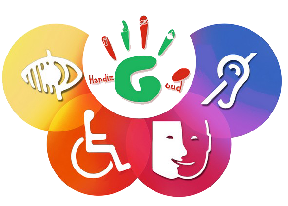

Documentation

Handizgoud :
Handizgoud est une association de sensibilisation au handicap de l'INSA de Lyon qui s'investit depuis maintenant cinq ans pour la sensibilisation des étudiants de l'INSA à l'insertion professionnelle et socio-culturelle des personnes en situation de handicap.
Pour cela, chaque année, les membres de l'association organisent tout au long de l'année des diners dans le noir, des cours de handisport, des « ateliers Handimanagement », de nombreux spectacles de sensibilisation, des ateliers de mise en situation et des cours de braille et de LSF.
Handizgoud est responsable de différents projets dont la semaine Handizgoud qui est une série de conférence et de rendez-vous qui sensibilisent et font découvrir le thème du handicap.
Handizgoud participe également au Forum Rhône-Alpes et a reçu de nombreux prix, si vous souhaitez obtenir plus d'informations sur l'association vous les trouverez aisément sur leur site web.
Site HandizGoud